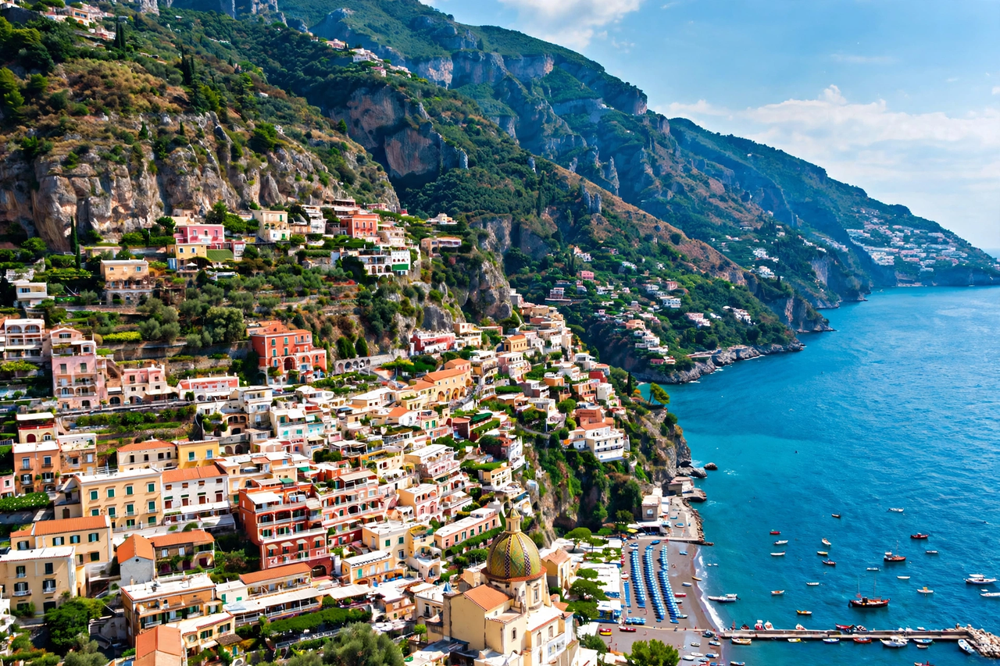

From Wikipedia, the free encyclopedia
| Amalfi Coast | |
|---|---|
 | |
| Location | Sorrentine Peninsula, Campania, Italy |
| Towns | Amalfi, Positano, Ravello, Atrani, Praiano, Maiori, Minori, Vietri sul Mare |
| UNESCO | World Heritage Site since 1997 ("Costiera Amalfitana") |
The Amalfi Coast (Italian: Costiera Amalfitana) is a stretch of coastline on the Tyrrhenian Sea, located in the province of Salerno in the southern Italian region of Campania. It is a popular tourist destination, known for its dramatic cliffs, pastel-coloured fishing villages, terraced lemon groves, and the winding SS163 coastal road. The coast is listed as a UNESCO World Heritage Site as a cultural landscape.
The coast runs for about 50 kilometres along the southern shore of the Sorrentine Peninsula, between Vietri sul Mare in the east and Positano in the west. The Lattari Mountains plunge steeply into the Gulf of Salerno, and towns cling to the slopes in terraces. The climate is Mediterranean, with hot dry summers and mild wet winters.
The town of Amalfi was the capital of the maritime republic of Amalfi, one of Italy's great sea powers of the early Middle Ages, whose Tavole Amalfitane were an early maritime code. The republic declined after a Pisan attack in 1135 and a devastating sea storm in 1343. In the 20th century the coast became a celebrated resort, attracting writers and artists; John Steinbeck's 1953 essay on Positano helped make it famous with American travellers.
The area draws millions of visitors annually. The main road, State Road 163 Amalfitana, is famous for its hairpin bends and views, and seasonal traffic restrictions apply. Ferries connect the coastal towns with Salerno, Sorrento, Naples, and the island of Capri. Local products include limoncello made from large sfusato lemons, ceramics from Vietri, and anchovies from Cetara.
Categories: Amalfi Coast | Coasts of Italy | World Heritage Sites in Italy